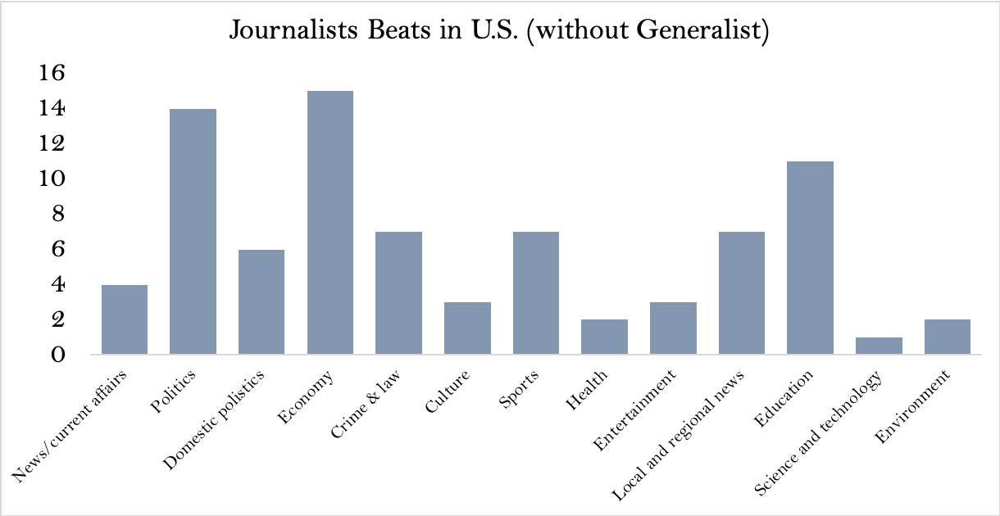

Telling the contemporary history of Afghanistan ubder the lens of Magnum's photographers

“I was going mad. And then, I got mad. ” Christina Russo said in her article for Medium, more like her interior monologue, “Not just for myself, but for those whose plight I had been exposing before my operation: the innumerable animals confined to their own physical and mental isolation and torment in zoos. ” That emotion finally outburst 15 months after her surgery: a benign mass removed from her uterus.
Russo was a professional journalist who began her career 20 years ago. Now, she is writing for National Geographic, YaleE360 and so on as a freelance journalist who focuses on wildlife.
What motivated her to cover wildlife is that she really cared about animals.
“I really wanted to pursue animal issues journalistically. And it gave me, you know, incredible satisfaction and pride.” She said, “I don't think there is any reason to have to separate journalism and what you love about, what interests you as a person. That can be your journalistic endeavor as well. ”
She recalled the speech that was given by Christiane Amanpour, CNN Chief International Anchor.
“She said that our job wasn't to be neutral, meaning we didn't have to give everybody the same amount of air time.” Russo said.
She said she thinks one of the most egregious aspects of journalism is that it has failed the natural world.
“I think one of the reasons why there is so much abuse to animals and to the land, water and the ocean is because journalism has not taken it and elevated it as a serious topic.” She said.
She explained there are so many disparities within issues when it comes to animals. Journalists who never really thought about animals tend to think like animals belong under the Non-government organizations. It is they that will take care of the animals, such as the World Wildlife Fund, the Humane Society.
Besides, the illegal wildlife trade is a lot more embraced but legal wildlife trade doesn't get the same amount of attention. For example some elephants in the wild have gotten a lot of attention because of their ivory, but elephants and all of the terrible experiences they suffer in zoos are overlooked.
She said society made changes last year at the United Nations about that issue after all those years of writing about wildlife legal trade and that was probably her greatest achievement as a journalist.
She thinks the number of journalists who cover wildlife are still small even if wildlife topics are more popular than before.
Source:World of Journalism
Sharon Guynup, a photographer in National Geographic Explorer as well as an environmental journalist shares different opinions.
She said it's not their job to lobby anyone.
“That is a completely different role for another profession. If we're doing our jobs properly, we're laying out a situation reporting on an issue and giving people enough information to make their own decisions.” Guynup said.
She also said journalists can't step over that line.
“It's very easy for people to choose media outlets that simply reflect back their own political beliefs. And I think true and reputable outlets can't violate journalism ethics because it further erodes public confidence in the press. ” She said.
She emphasized that had been happening. The explosion about what is on the internet has been part of the erosion process obviously in the last four years with aggressive attacks against the media by President Trump.
Liz Kimbrough, a journalist who has been a full time journalist in Mongabay since February of this year, has a similar opinion.
She thinks a lot of focus at mongabay in journalism is around ethics.
“We focus a lot on conservation and science, but there is definitely a strong line between journalism and advocacy.” Kimbrough said.
She added it's inaccurate to say that a journalist is completely unbiased for science and environmental journalists are passionate about conservation.
“So I think what's important is to be aware of your biases and just to make sure that you are talking to as many people as you can for a story and getting different angles.” She said.
If journalists are going into something with the advocacy mindset, you might be doing that topic a disservice and miss some of the truth. She talked about her experience to illustrate.
For Rachel Fobar, a National Geographic Society wildlife trade investigative reporter, it’s important to use data to prove something is happening. Meanwhile, her dream story is to do one where wildlife is affected and humans are affected.
“What you don't realize is most of these people are either forced to do it like the Taiwanese fishing fleets, or they are incredibly desperate and totally poverty stricken and really the money. ” She said , “And so the solution is more about helping the people who do the poaching so that they don't need to do the poaching than any.”
Juhi Parekh, like other environmental journalists covering wildlife, also love nature. She is an undergraduate student in the department of fisher and wildlife in Michigan State University.
She said the role of environmental journalists is to provide information for the public and tell people what is happening in the world.
Professor Tim Vos who is the director of the Michigan State University School of Journalism said biased journalism can have a point of view while it can also be factually oriented.
“Environmental journalism has been plagued by that old style of objectivity, like a decade ago, right. It was the whole idea of false balance when it came to climate science where the overwhelming scientific consensus said one thing.” He said.
He also said it is not good form of journalism either if outlier voices said another and they were put in equal balance in those areas.
“In fact, it was a particularly harmful form of environmental journalism. So in that sense if advocacy is about advocating for the environment, seems like a pretty sensible thing for journalists to do. ” Vos said.